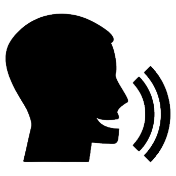

Pineda Galindo Ricardo Angel
Ingeniero en Computación
Tengo 20 años y actualmente estoy estudiando en la Facultad de Ingeniería, UNAM. Voy en 5to semestre de un total de 10 y estoy muy interesado en el área de la ciberseguridad.
HABILIDADES
Tengo conocimientos intermedios en:
- Lenguaje C
- Python
- Java
Tengo conocimientos básicos en:
- Android Studio
- HTML

CURSOS Y CERTIFICACIONES
Actualmente cuento con 2 certificados y 1 diploma, pero a lo largo de la carrera he tomado cursos en distintas plataformas y libros.
- Curso Desarrollo de aplicaciones para Android. Jun 2022 No. folio: 1699
- Certificado de Scrum Fundamentals. Mar 2023 ID:971251
- Certificado Cisco Networking Essentials. Jul 2023
IDIOMAS
Ademas del español, el único lenguaje extranjero que manejo es el inglés. De manera general podría decir que tengo un nivel B1 pero con unas cuantas dificultades en el Speaking.
EXPERIENCIA LABORAL
- Freelance en Servicios de mantenimiento correctivo en Computadoras
Mi papel era identificar problemas, proponer soluciones y sustituir hardware en base al presupuesto
- Freelance en Armado de PC
Tenía un trato directo con los clientes para poder generar un presupuesto en base a sus necesidades
HABILIDADES BLANDAS Y APTITUDES
Me considero una persona responsable, con creatividad e iniciativa y autodidacta. Respecto a las soft skills, creo que puedo asumir el rol de lider en situaciones que lo requieran, soy organizado y tengo facilidad de trabajo en equipo
HOBBIES
En mis ratos de ocio intento reaprender a tocar la guitarra,ver películas y series. Pero cuando aprovecho mi tiempo de mejor manera, me gusta investigar cualquier tipo de información respecto a la ciberseguridad y utilizo las plataformas de HackTheBox Academy y HackTheBox LAB para aprender o poner en práctica mis conocimientos sobre las distintas tecnologías que se utilizan en las computadoras con sistema operativo Linux o Windows.